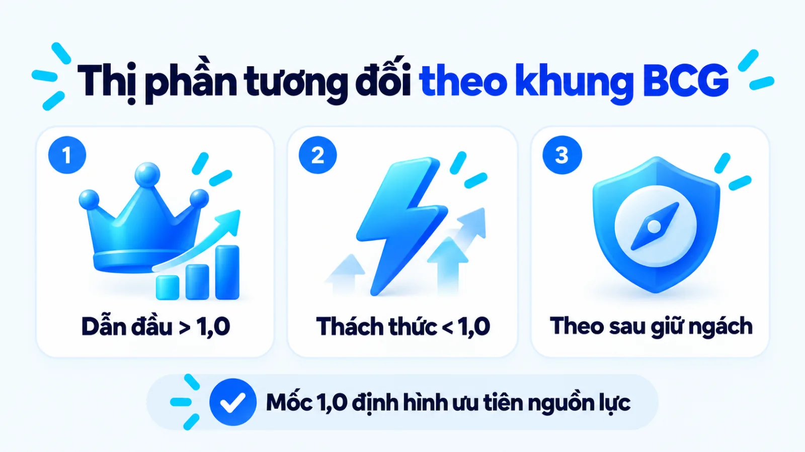
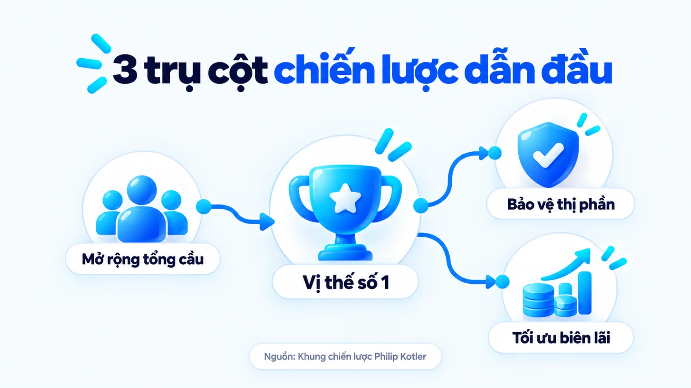
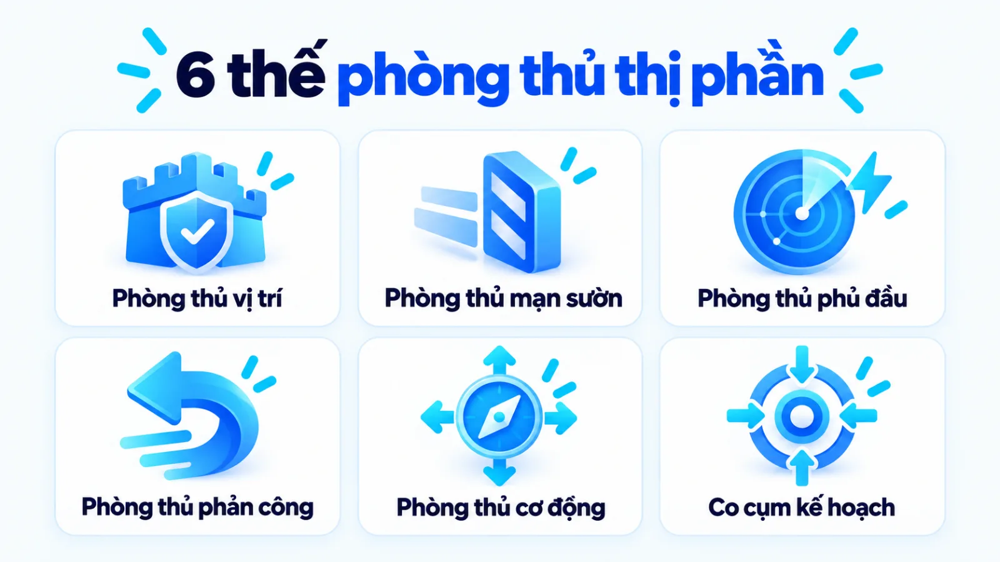
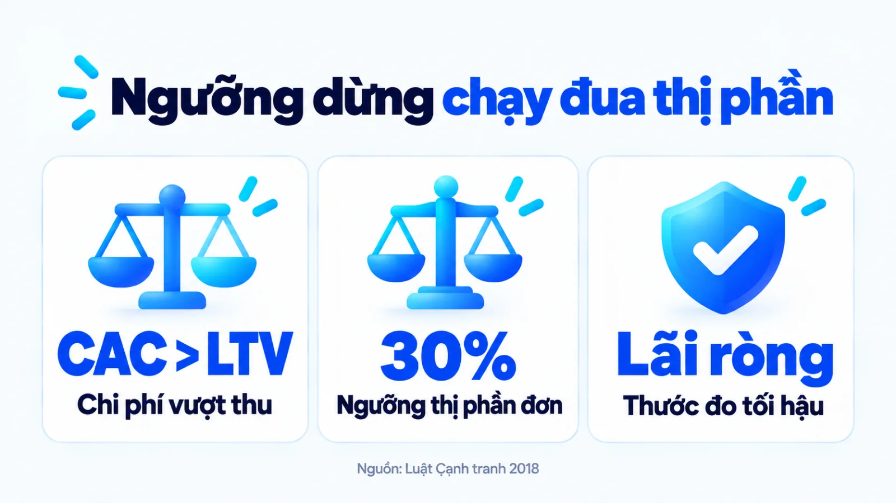

Chiến lược marketing của người dẫn đầu thị trường
Chiến lược marketing của người dẫn đầu thị trường là hệ thống quyết định phân bổ nguồn lực giúp doanh nghiệp nắm thị phần lớn nhất vừa mở rộng tổng nhu cầu ngành, vừa bảo vệ thị phần hiện hữu và giữ vững biên lợi nhuận ròng. Với cả tập đoàn lớn lẫn doanh nghiệp vừa và nhỏ đứng đầu một ngách hoặc tỉnh thành, bài toán khó nhất là cân đối ngân sách giữa thu hút người mua mới và dựng rào cản trước kẻ thách thức. Nếu cố giữ vị trí số một bằng cách giảm giá đại trà hoặc chạy đua giành những phần trăm thị phần cuối có chi phí quá cao, doanh nghiệp rất dễ làm sụt giảm dòng tiền ròng. Tôi là Lê Tuấn Việt, Marketing Leader tại TAKI Group. Trong bài viết này, tôi phân tích ranh giới nguồn lực giữa các vị thế, cách chọn thế phòng thủ vừa sức và ngưỡng dừng mở rộng thị phần để bảo vệ lợi nhuận thực tế.
- Đăng ngày
- Cập nhật

Tóm tắt nhanh
- Vị thế dẫn đầu thị trường (Market Leader) không chỉ dành cho tập đoàn toàn ngành mà áp dụng cho cả doanh nghiệp vừa và nhỏ nắm thị phần tương đối lớn nhất trong một ngách sản phẩm hoặc khu vực địa lý xác định.
- Khung chiến lược của người dẫn đầu vận hành đồng thời trên ba trụ cột: mở rộng tổng nhu cầu thị trường, bảo vệ thị phần bằng sáu thế phòng thủ chủ động và chỉ tăng thị phần khi giữ được biên lợi nhuận ròng.
- Thay vì dàn trải nguồn lực trên cả sáu mặt trận hoặc sa đà giảm giá đại trà, doanh nghiệp vừa và nhỏ nên ưu tiên phòng thủ vị trí bằng chất lượng dịch vụ và chặn sườn ở phân khúc nhạy cảm về giá.
- Đo lường vị thế dẫn đầu cần kết hợp ba tầng chỉ số từ độ phủ nhận biết, chi phí thu hút khách hàng biên cho tới lợi nhuận ròng, đồng thời dừng mở rộng khi chi phí chuyển đổi vượt giá trị vòng đời khách hàng.
Mục lục bài viết8 phần
Người dẫn đầu thị trường là gì trong marketing
Người dẫn đầu thị trường (Market Leader) là doanh nghiệp nắm giữ thị phần lớn nhất đối với một dòng sản phẩm hoặc dịch vụ trong ranh giới thị trường xác định, thường dẫn dắt ngành về mặt bằng giá, tốc độ ra mắt sản phẩm mới, độ phủ phân phối và cường độ truyền thông. Trong quản trị cạnh tranh, đây là điểm tham chiếu mà cả người mua lẫn đối thủ đều quan sát trước khi ra quyết định.
Theo khung phân tích của Philip Kotler và Kevin Lane Keller công bố năm 2016 trong giáo trình Marketing Management của Pearson Education dựa trên tổng hợp cấu trúc cạnh tranh đa ngành toàn cầu, hầu hết các ngành hàng đều hình thành cấu trúc phân tầng xoay quanh doanh nghiệp đứng đầu. Giữ tỷ trọng doanh số lớn nhất giúp đơn vị này hưởng lợi đầu tiên khi nhu cầu tăng, nhưng cũng trở thành mục tiêu bị đối thủ chia sẻ khách hàng.
Ba dấu hiệu nhận diện vị thế dẫn đầu trong ngành
Trong thực tế vận hành, nhiều doanh nghiệp không có sẵn báo cáo thống kê thị phần toàn ngành cập nhật theo quý nhưng vẫn nhận diện được vị thế dẫn đầu qua các tín hiệu thương mại trực tiếp. Ngoài con số doanh số tuyệt đối, vị thế của một đơn vị dẫn đầu được xác lập qua ba dấu hiệu vận hành cốt lõi dưới đây:
- Quyền tham chiếu giá: Khi doanh nghiệp điều chỉnh biểu giá hoặc cấu trúc gói dịch vụ, các đối thủ trực tiếp trong cùng phân khúc buộc phải tính toán lại bảng giá của họ để không mất khách.
- Độ phủ kênh ưu tiên: Sản phẩm chiếm vị trí trưng bày thuận lợi nhất tại điểm bán lẻ, đại lý khu vực hoặc giữ thứ hạng hiển thị tự nhiên cao nhất trên các cụm truy vấn cốt lõi của ngành.
- Định chuẩn kỳ vọng mua: Người tiêu dùng lấy tiêu chuẩn kỹ thuật, quy trình bảo hành hoặc trải nghiệm dịch vụ của doanh nghiệp làm thước đo mặc định khi đem so sánh với các nhà cung cấp khác.
Khác biệt giữa dẫn đầu toàn ngành và dẫn đầu ngách
Nhiều chủ SME (doanh nghiệp vừa và nhỏ) thường nghĩ chiến lược marketing của người dẫn đầu thị trường chỉ dành cho tập đoàn đa quốc gia có ngân sách lớn. Tuy nhiên, theo tài liệu chuẩn hóa thuật ngữ năm 2023 của Corporate Finance Institute, vị thế dẫn đầu được xác định theo biên giới thị trường liên quan: từ quy mô toàn ngành quốc gia cho tới một ngách sản phẩm hoặc khu vực địa lý cụ thể.
Một chuỗi siêu thị mẹ và bé đứng đầu tỉnh hay xưởng bao bì giữ sản lượng lớn nhất ngách thực phẩm sạch đều là người dẫn đầu trong ranh giới của họ (ví dụ biên tập, không phải kết quả khách hàng thật). Điểm tôi muốn làm rõ là SME dẫn đầu ngách cũng bị đối thủ vây đánh như tập đoàn lớn nhưng biên độ chịu lỗ mỏng hơn, nên chọn sai cách phòng thủ sẽ làm đứt gãy dòng tiền.
Người dẫn đầu khác kẻ thách thức và theo sau ở đâu
Người dẫn đầu thị trường (Market Leader), kẻ thách thức (Market Challenger) và người theo sau hoặc kẻ nép góc (Market Follower/Nicher) khác nhau cốt lõi ở mục tiêu phân bổ nguồn lực và khẩu vị rủi ro. Trong khi người dẫn đầu ưu tiên mở rộng tổng dung lượng ngành và bảo vệ ranh giới hiện hữu, kẻ thách thức lại dồn lực đánh vào điểm yếu để giành giật thị phần theo sáu tiêu chí đối chiếu dưới đây.
| Tiêu chí đối chiếu | Người dẫn đầu (Market Leader) | Kẻ thách thức và Theo sau |
|---|---|---|
| Mục tiêu trọng tâm | Mở rộng tổng cầu toàn ngành, giữ vững thị phần hiện tại và bảo toàn biên lãi ròng | Kẻ thách thức tìm cách chiếm thị phần số một; người theo sau giữ thị phần ổn định ít xung đột |
| Trọng tâm nguồn lực | Phân bổ đồng thời cho giáo dục thị trường mới, đổi mới sản phẩm và củng cố rào cản kênh | Kẻ thách thức dồn ngân sách vào một mũi nhọn tấn công; kẻ nép góc chuyên môn hóa vào một hốc nhỏ |
| Chính sách giá bán | Giữ mặt bằng giá chuẩn theo giá trị thương hiệu, hạn chế giảm giá đại trà làm hỏng biên lãi | Kẻ thách thức thường dùng giá thấp hoặc gói khuyến mãi đậm để phá vỡ thói quen mua hàng cũ |
| Đổi mới sản phẩm | Liên tục nâng cấp tiêu chuẩn sản phẩm và ra mắt biến thể chặn các khoảng trống thị trường | Kẻ thách thức cải tiến vượt trội ở một tính năng hẹp; người theo sau sao chép nhanh mô hình đã thắng |
| Hệ thống phân phối | Bao phủ sâu rộng các điểm bán chủ lực và thiết lập chính sách gắn kết đại lý dài hạn | Tập trung khai thác các kênh ngách, kênh trực tuyến mới hoặc đại lý chưa hài lòng với hãng lớn |
| Rủi ro vận hành | Dễ rơi vào thế cố thủ thụ động, dàn trải ngân sách hoặc chịu giám sát pháp lý về độc quyền | Kẻ thách thức dễ cạn vốn nếu cuộc chiến kéo dài; kẻ nép góc gặp rủi ro khi ngách thị trường bão hòa |
Bảng đối chiếu trên áp dụng cho từng dòng sản phẩm hoặc khu vực thương mại độc lập, không đánh đồng cho toàn bộ doanh nghiệp đa ngành. Một công ty có thể là người dẫn đầu ở dòng sản phẩm truyền thống nhưng lại ở vị thế kẻ thách thức khi bước sang một danh mục mới hoàn toàn.

Để lượng hóa khoảng cách vị thế, tài liệu phương pháp luận cập nhật năm 2020 của Boston Consulting Group (BCG) về Growth–share matrix (ma trận tăng trưởng và thị phần) dùng chỉ số relative market share (thị phần tương đối, lấy thị phần doanh nghiệp chia cho đối thủ lớn nhất kế cận). Chỉ người dẫn đầu mới có thị phần lớn hơn đối thủ kế cận, qua đó tích lũy lợi thế đường cong kinh nghiệm và tạo dòng tiền cao hơn.
Trong vận hành thực tế, sự đối lập giữa các vị thế thể hiện rõ ở cách doanh nghiệp đầu tư content marketing (tiếp thị nội dung) để mở rộng nhu cầu chung so với việc dồn ngân sách vào kênh marketing bán hàng online (trực tuyến) ngắn hạn. Hiểu rõ ranh giới vị thế giúp SME không bê nguyên chiêu khuyến mãi của kẻ thách thức sang áp dụng cho sản phẩm trụ cột.
3 chiến lược marketing của người dẫn đầu thị trường
Khung chiến lược marketing của người dẫn đầu thị trường vận hành trên ba trụ cột song song: mở rộng tổng nhu cầu toàn thị trường để hưởng lợi lớn nhất từ chiếc bánh chung, triển khai sáu thế phòng thủ chủ động bằng đổi mới liên tục để giữ thị phần, và chỉ gia tăng thêm thị phần khi biên lợi nhuận ròng được bảo toàn. Ba trụ cột này tạo thành thế kiềng ba chân giữ nhịp tăng trưởng bền vững.

Trụ cột 1: Mở rộng tổng nhu cầu toàn thị trường
Theo nguyên tắc phân bổ lợi ích của Philip Kotler và Kevin Lane Keller năm 2016 trong Marketing Management, khi tổng quy mô nhu cầu của một ngành hàng tăng lên, doanh nghiệp nắm thị phần lớn nhất thường là bên thu về phần giá trị tăng thêm cao nhất.
Thay vì chỉ nhìn chằm chằm vào việc lấy khách của đối thủ (chia lại chiếc bánh cũ), người dẫn đầu tạo ra dư địa tăng trưởng mới bằng cách làm chiếc bánh chung to lên qua ba hướng khai thác: thu hút nhóm khách hàng chưa từng sử dụng sản phẩm, giới thiệu thêm bối cảnh hoặc công dụng mới cho sản phẩm hiện có, và khuyến khích khách hàng hiện tại tăng tần suất hoặc định lượng sử dụng mỗi lần.
Với SME dẫn đầu ngách địa phương, mở rộng tổng cầu không đòi hỏi truyền thông đại chúng đắt đỏ. Ví dụ biên tập, không phải kết quả khách hàng thật: một nha khoa đứng đầu cấp huyện hướng dẫn các gia đình trẻ tầm soát răng miệng định kỳ sáu tháng một lần thay vì chờ đau mới khám. Khi thói quen mới hình thành, đơn vị sẵn uy tín và độ phủ sẽ đón nhận phần lớn nhu cầu phát sinh.
Trụ cột 2: Sáu thế phòng thủ bảo vệ thị phần
Trong lúc mở rộng thị trường, người dẫn đầu phải liên tục gia cố các điểm chạm để ngăn kẻ thách thức khoét vào những phân khúc bỏ trống. Khung quản trị cạnh tranh năm 2016 của Philip Kotler và Kevin Lane Keller trên Pearson Education phân loại sáu thế phòng thủ thị phần theo mức độ chủ động và phạm vi nguồn lực dưới đây:
- Phòng thủ vị trí (Position defense): Củng cố uy tín thương hiệu và chất lượng sản phẩm cốt lõi, nhưng nếu chỉ cố thủ thụ động vào một công thức cũ thì rất dễ rơi vào trạng thái cận thị marketing.
- Phòng thủ mạn sườn (Flank defense): Dựng các tiền đồn bảo vệ những phân khúc yếu hơn (như dòng hàng giá phổ thông hoặc kích cỡ nhỏ) để chặn lối thâm nhập giá rẻ của đối thủ.
- Phòng thủ phủ đầu (Preemptive defense): Chủ động tung ra cải tiến mới, mở trước điểm bán hoặc chiếm lĩnh tín hiệu thị trường trước khi đối thủ kịp phát động đợt tấn công.
- Phòng thủ phản công (Counteroffensive defense): Khi bị tấn công trực diện vào vùng lõi, người dẫn đầu xác định đúng điểm yếu về dòng tiền hoặc chuỗi cung ứng của đối thủ để đáp trả có trọng tâm.
- Phòng thủ cơ động (Mobile defense): Mở rộng phạm vi sang các phân khúc lân cận thông qua việc đa dạng hóa giải pháp hoặc phát triển thế hệ công nghệ tiếp theo để đáp ứng nhu cầu gốc của khách.
- Phòng thủ co cụm có kế hoạch (Contraction defense): Chủ động rút nguồn lực khỏi những vùng địa lý hoặc dòng hàng biên lợi nhuận thấp, chi phí phục vụ cao để dồn vốn bảo vệ pháo đài chính.

Vậy một doanh nghiệp vừa và nhỏ có ngân sách giới hạn thì chọn thế phòng thủ nào trước? Tôi ưu tiên kết hợp phòng thủ vị trí liên tục nâng cấp dịch vụ với phòng thủ co cụm có kế hoạch: cắt bỏ các mã hàng quay vòng chậm để dồn vốn giữ tệp khách tạo lợi nhuận cốt lõi. Phòng thủ tốt nhất là tự nâng chuẩn mình trước khi bị ép đổi.
Trụ cột 3: Gia tăng thị phần gắn với biên lợi nhuận
Nghiên cứu thuộc dự án Profit Impact of Market Strategies (PIMS, tác động lợi nhuận của chiến lược thị trường) do Buzzell, Gale và Sultan công bố năm 1975 trên Harvard Business Review từ cuộc khảo sát 57 tập đoàn lớn tại Bắc Mỹ cho thấy ROI (tỷ suất sinh lời trên vốn đầu tư) trước thuế tăng đều từ nhóm thị phần dưới 10% lên trên 40%, thêm trung bình 5 điểm phần trăm ROI cho mỗi 10 điểm thị phần.
Theo phân tích cơ chế trong cùng báo cáo PIMS năm 1975 trên Harvard Business Review, lợi thế sinh lời này đến từ quy mô mua hàng, sản xuất, hiệu suất marketing và sức mạnh đàm phán với nhà phân phối. Tuy nhiên, vì mẫu PIMS chỉ đo trên tập đoàn lớn tại Bắc Mỹ, SME không thể mua thị phần bằng mọi giá: khi chi phí thu hút khách vượt lãi gộp, thêm thị phần là bớt lợi nhuận.
Bốn bước chọn chiến lược cho người dẫn đầu ngách
Để chuyển hóa lý thuyết ba trụ cột sang vận hành thực tế, doanh nghiệp dẫn đầu một ngách hoặc khu vực địa phương cần thực hiện quy trình bốn bước gồm: đo lại thị phần tương đối và biên lợi nhuận, chọn tỷ trọng ngân sách giữa mở rộng cầu và phòng thủ, thiết lập rào cản chuyển đổi ở kênh chủ lực, và đặt ngưỡng dừng chạy đua thị phần.
- 01Đo thị phần và biên lãiTính thị phần tương đối với đối thủ số hai và tách biên lãi ròng từng dòng hàng.
- 02Phân bổ tỷ trọng nguồn lựcChia tỷ lệ ngân sách giữa mở rộng cầu mới và phòng thủ theo độ chín thị trường.
- 03Dựng rào cản chuyển đổiTăng chi phí rời bỏ hợp lý bằng dịch vụ hậu mãi, dữ liệu lịch sử mua hàng và độ phủ kênh chủ lực.
- 04Khóa ngưỡng dừng mở rộngChốt trần chi phí thu hút khách hàng biên để dừng đúng lúc trước khi làm xói mòn dòng tiền ròng.
Bước 1: Đo lại thị phần tương đối và biên lợi nhuận
Người phụ trách marketing phối hợp cùng bộ phận tài chính rà soát lại doanh thu, thị phần tương đối so với đối thủ kế cận và biên lợi nhuận ròng của từng nhóm sản phẩm hoặc khu vực địa lý. Thay vì nhìn vào một con số doanh số gộp toàn công ty, bước này giúp bóc tách rõ đâu là dòng sản phẩm pháo đài đang tạo ra dòng tiền dương và đâu là mạn sườn đang bị đối thủ giá rẻ xâm lấn.
Đầu ra: Bản đồ phân loại danh mục sản phẩm theo hai trục thị phần tương đối và biên lợi nhuận ròng, chỉ rõ dòng hàng cốt lõi cần bảo vệ tuyệt đối trong kỳ tới.
Bước 2: Chọn ưu tiên giữa mở rộng cầu và phòng thủ
Dựa trên bản đồ danh mục ở bước đầu, doanh nghiệp xác định tỷ trọng ngân sách quý tới và tích hợp vào cách lập kế hoạch marketing của năm. Nếu ngách còn nhiều người chưa biết đến giải pháp và ít đối thủ, hãy ưu tiên mở rộng tổng cầu; ngược lại, khi ngách đã chật và có đối thủ phá giá, nguồn lực phải dồn về phòng thủ vị trí và mạn sườn.
Đầu ra: Bảng phân bổ ngân sách và nhân sự theo tỷ lệ phần trăm cụ thể giữa mục tiêu mở rộng tệp khách mới và mục tiêu giữ chân tệp khách hiện hữu.
Bước 3: Thiết lập rào cản chuyển đổi và kênh chủ lực
Đội ngũ triển khai cụ thể hóa hướng phòng thủ thành các chiến thuật marketing tạo switching cost (chi phí chuyển đổi nhà cung cấp) hợp lý như lưu hồ sơ bảo dưỡng, tích điểm theo sản lượng hoặc gói dịch vụ năm. Trên kênh số, doanh nghiệp đồng bộ thông điệp vào chiến lược Digital Marketing và tiếp thị lại tệp khách cũ qua kế hoạch chạy quảng cáo Facebook kiểm soát tần suất.
Đầu ra: Kịch bản chăm sóc giữ chân khách hàng cốt lõi kèm bộ quy tắc phân phối nội dung trên kênh bán hàng và kênh truyền thông chủ lực.
Bước 4: Đặt ngưỡng dừng tăng thị phần để giữ lãi ròng
Trước khi phát động chiến dịch giành thêm thị phần, người quản lý cần tính ngưỡng CAC (chi phí thu hút khách hàng mới) ở nhóm khách hàng biên và đối chiếu với LTV (giá trị vòng đời khách hàng). Ngay khi chi phí chuyển đổi thêm thị phần tiến sát hoặc vượt lãi gộp kỳ vọng, hệ thống phải dừng trợ giá mở rộng để chuyển sang tối ưu giá trị đơn hàng trên tệp khách đã có.
Đầu ra: Văn bản quy định trần chi phí thu hút khách hàng tối đa và ngưỡng biên lợi nhuận ròng tối thiểu được phép duy trì cho từng chiến dịch.
Ba sai lầm khiến người dẫn đầu đánh mất thị phần
Doanh nghiệp dẫn đầu thị trường thường đánh mất vị thế không phải vì thiếu ngân sách mà do ba sai lầm chiến lược gồm: tự mãn cố thủ vào sản phẩm cũ, bị cuốn vào cuộc chiến giảm giá đại trà trên dòng hàng chính, và dàn trải nguồn lực giữ những phân khúc lỗ vốn. Cả ba sai lầm này đều bắt nguồn từ việc nhầm lẫn giữa quy mô doanh số và sức khỏe lợi nhuận.
Sai lầm đầu tiên là biến phòng thủ vị trí thành sự cố thủ thụ động: doanh nghiệp ngừng lắng nghe những bất tiện nhỏ của khách hàng, tạo khoảng trống cho kẻ thách thức tung ra giải pháp tiện lợi hơn.
Sai lầm thứ hai là phản ứng thiếu tách bạch trước đối thủ giá rẻ: thay vì mở gói sản phẩm tinh gọn để chặn sườn, doanh nghiệp lại hạ giá trực tiếp trên dòng hàng chủ lực, tự cắt bỏ phần biên lãi nuôi dịch vụ hậu mãi. Sai lầm thứ ba là tâm lý tiếc nuối không dám co cụm có kế hoạch ở những điểm bán hoặc mã hàng đã lỗ kéo dài.
Ví dụ biên tập, không phải kết quả khách hàng thật
Đối chiếu hai cách phản ứng của nhà phân phối thiết bị lọc nước dẫn đầu một tỉnh khi có đối thủ giá rẻ thâm nhập
Trong ví dụ biên tập, không phải kết quả khách hàng thật này, một nhà phân phối máy lọc nước dẫn đầu tỉnh đang có dòng máy chủ lực biên lãi cao. Khi đối thủ tung máy giá rẻ, cách làm sai là hạ giá dòng chính làm hụt phí bảo trì; cách làm đúng là giữ giá dòng chủ lực, mở gói tiêu chuẩn chặn sườn và nhắc thay lõi định kỳ theo ba điểm sau:
- Giữ dòng chính
- Bảo toàn biên lãi gộp của dòng máy chủ lực để nuôi dịch vụ bảo hành
- Gói chặn sườn
- Mở dòng máy tiêu chuẩn tinh gọn tính năng để chặn đối thủ giá rẻ
- Nhắc thay lõi
- Duy trì lịch chăm sóc định kỳ để giữ chân khách cũ và tạo rào cản rời bỏ
Trong thực tế tư vấn, thay vì lao vào cuộc đua giảm giá làm suy kiệt dòng tiền, việc tập trung tối ưu trải nghiệm điểm bán, cấu trúc danh mục hàng hóa và giữ chân khách hàng khu vực mang lại kết quả bền vững hơn nhiều.
Chẳng hạn, trong dự án cố vấn Marketing cho Uyên Uyên Mart (tháng 5/2025 đến tháng 5/2026) do tôi phụ trách, việc tối ưu điểm bán đã góp phần tăng 45% lượt khách đến cửa hàng và nâng doanh thu toàn hệ thống từ 3 lên 6 tỷ đồng mỗi tháng (tăng 100% so với cùng kỳ). Kết quả này gắn với điều kiện thực thi trong kỳ đo, không phải cam kết cho mọi mô hình.
Đo chiến lược marketing của người dẫn đầu thị trường
Đo lường hiệu quả chiến lược marketing của người dẫn đầu thị trường không dừng ở con số thị phần danh nghĩa mà phải theo dõi đồng thời ba tầng chỉ số gồm tín hiệu hiện diện, sức khỏe tệp khách hàng và biên lợi nhuận ròng. Bảng dưới đây thiết lập khung đo lường ba tầng kèm giới hạn quy kết khi đọc báo cáo quản trị.
| Tầng và nhóm chỉ số | Cách tính và nguồn dữ liệu | Giới hạn khi đọc chỉ số |
|---|---|---|
| Tầng 1: Tín hiệu hiện diện | Share of Search (tỷ trọng tìm kiếm thương hiệu), độ phủ điểm bán và mức nhận biết đầu tiên trong ngách | Cho biết sức hút thương hiệu đầu phễu nhưng không phản ánh trực tiếp tỷ lệ chốt đơn hay lãi ròng |
| Tầng 2: Sức khỏe tệp khách | Retention Rate (tỷ lệ giữ chân khách hàng), tần suất mua lặp lại và chi phí thu hút khách hàng biên | Cần tách riêng khách mua vì khuyến mãi ngắn hạn với khách gắn bó nhờ chất lượng sản phẩm cốt lõi |
| Tầng 3: Thị phần và lãi ròng | Thị phần tương đối so với đối thủ số hai kết hợp Net Margin (biên lợi nhuận ròng) sau chi phí marketing | Thị phần tăng nhưng lãi ròng giảm là tín hiệu cảnh báo doanh nghiệp đang mua thị phần quá đắt |
Khi đọc bảng chỉ số trên theo chu kỳ hàng quý, người quản lý phải đặt tầng 2 và tầng 3 làm chốt chặn kiểm soát cho tầng 1. Nếu thị phần tương đối ở tầng 3 tăng thêm vài điểm phần trăm nhưng chi phí thu hút khách hàng biên ở tầng 2 tăng vọt làm biên lợi nhuận ròng đi xuống, chiến dịch mở rộng đó đang tạo ra tăng trưởng âm về mặt tài chính.

Bên cạnh việc theo dõi chỉ số, nhà quản trị cần biết rõ thời điểm nên chủ động dừng cuộc đua mở rộng thị phần để chuyển sang tối ưu chiều sâu lợi nhuận. Ba điều kiện đảo chiều buộc người dẫn đầu không nên cố tăng thêm thị phần gồm có:
- Chi phí chuyển đổi vượt ngưỡng sinh lời: Nhóm khách hàng còn lại trên thị trường là những người có độ trung thành rất cao với đối thủ hoặc có nhu cầu quá khác biệt, khiến chi phí thuyết phục họ cao hơn giá trị vòng đời khách hàng.
- Vượt trần năng lực vận hành và phục vụ: Khi quy mô đơn hàng vượt quá khả năng kiểm soát chất lượng của đội ngũ kỹ thuật, bảo hành hoặc chuỗi cung ứng, việc cố nhận thêm khách sẽ làm hỏng trải nghiệm và đánh mất uy tín thương hiệu cốt lõi.
- Chạm ngưỡng rủi ro pháp lý cạnh tranh: Theo Điều 24 Luật Cạnh tranh số 23/2018/QH14 do Quốc hội Việt Nam ban hành năm 2018 và áp dụng trên toàn lãnh thổ Việt Nam, doanh nghiệp có thị phần từ 30% trở lên trên thị trường liên quan thuộc nhóm chịu quy định kiểm soát độc quyền, bị nghiêm cấm thực hiện các hành vi lạm dụng như định giá hủy diệt dưới giá thành toàn bộ nhằm loại bỏ đối thủ.
Việc tích hợp bảng chỉ số ba tầng và các ngưỡng giới hạn pháp lý, tài chính này vào hệ thống báo cáo định kỳ là mảnh ghép thiết yếu trong chuyên mục Quản trị Marketing, giúp chủ doanh nghiệp ra quyết định dựa trên dữ liệu thực tế thay vì chạy theo cảm tính số một.
Câu hỏi thường gặp về chiến lược người dẫn đầu
Thị phần bao nhiêu thì được coi là dẫn đầu thị trường?
Không có một mốc phần trăm cố định cho mọi ngành, vì doanh nghiệp dẫn đầu thị trường chỉ cần nắm thị phần lớn nhất so với đối thủ đứng thứ hai trong ranh giới thị trường đã xác định. Tuy nhiên, dưới góc độ pháp lý tại Việt Nam, Điều 24 Luật Cạnh tranh 2018 quy định doanh nghiệp có thị phần từ 30% trở lên trên thị trường liên quan thuộc diện kiểm soát độc quyền và chịu sự giám sát chặt về hành vi hạn chế cạnh tranh.
Doanh nghiệp nhỏ dẫn đầu một tỉnh có áp dụng được không?
Có, doanh nghiệp vừa và nhỏ hoàn toàn áp dụng được vì cơ chế kinh tế của vị thế dẫn đầu phụ thuộc vào thị phần tương đối trong khu vực thương mại mà khách hàng thực sự cân nhắc mua sắm, không chỉ tính trên quy mô toàn quốc. Với đơn vị dẫn đầu một tỉnh hoặc ngách hẹp, ưu tiên số một là phòng thủ vị trí bằng dịch vụ hậu mãi tại chỗ và phòng thủ mạn sườn ở các gói giá phổ thông để ngăn đối thủ ngoại tỉnh thâm nhập.
Khi nào nên dùng thương hiệu phụ để phòng thủ mạn sườn?
Doanh nghiệp chỉ nên tách thương hiệu phụ khi kẻ thách thức tấn công bằng mức giá thấp vào phân khúc nhạy cảm về giá, mà nếu giảm giá trực tiếp trên dòng sản phẩm chính sẽ làm sụt biên lợi nhuận và hỏng định vị chất lượng cao. Nếu ngân sách marketing hạn hẹp không đủ nuôi hai nhãn hiệu độc lập, doanh nghiệp vừa và nhỏ nên thiết kế một gói sản phẩm tinh gọn dưới cùng thương hiệu mẹ thay vì mở thương hiệu mới.
Vì sao thị phần tăng nhưng lợi nhuận ròng lại giảm?
Lợi nhuận ròng sụt giảm khi thị phần tăng xảy ra do chi phí thu hút nhóm khách hàng biên ở phần đuôi thị trường (nhóm đã trung thành với đối thủ hoặc ít có nhu cầu thật) tăng vọt và vượt quá giá trị vòng đời khách hàng. Ngoài ra, việc giành thêm thị phần bằng khuyến mãi sâu hoặc nới lỏng công nợ thường kéo theo tỷ lệ trả hàng, chi phí phục vụ và rủi ro nợ xấu làm xói mòn dòng tiền ròng.
Khi nào doanh nghiệp không nên cố tăng thêm thị phần?
Không nên cố mở rộng thêm thị phần khi doanh nghiệp chạm một trong ba ngưỡng giới hạn: chi phí chuyển đổi nhóm khách hàng còn lại cao hơn lợi nhuận thu về, năng lực vận hành và chuỗi cung ứng đã quá tải làm giảm chất lượng phục vụ, hoặc thị phần vượt ngưỡng kiểm soát độc quyền gây rủi ro pháp lý. Ở thời điểm đó, tối ưu hóa giá trị đơn hàng và tỷ lệ mua lặp lại trên tệp khách hiện hữu sẽ mang lại lợi nhuận an toàn hơn.
Đo thị phần tương đối thế nào khi thiếu báo cáo ngành?
Khi không có báo cáo dung lượng toàn ngành từ các hãng nghiên cứu thị trường, doanh nghiệp vừa và nhỏ có thể ước tính thị phần tương đối bằng cách đối chiếu doanh thu ước tính, số lượng điểm bán phủ hàng hoặc tỷ trọng tìm kiếm tự nhiên của mình với đối thủ lớn nhất kế cận. Mọi chỉ số ước tính qua tín hiệu số hoặc khảo sát điểm bán cần được ghi rõ phạm vi mẫu và kiểm chứng chéo với tốc độ tăng trưởng đơn hàng thực tế.
Kết luận
Bản chất của chiến lược marketing của người dẫn đầu thị trường không nằm ở việc phô trương quy mô hay đè bẹp mọi đối thủ bằng cuộc chiến giá, mà là bài toán phân bổ nguồn lực kỷ luật giữa mở rộng tổng cầu, phòng thủ bằng đổi mới và giữ vững biên lợi nhuận ròng. Thị phần chỉ thực sự có giá trị khi nó chuyển hóa thành dòng tiền bền vững và củng cố rào cản niềm tin nơi khách hàng.
Ngay trong tuần này, bạn có thể mở báo cáo doanh thu quý gần nhất để tự kiểm tra hai chỉ số của dòng sản phẩm chủ lực: thị phần tương đối so với đối thủ kế cận và biến động chi phí thu hút khách hàng mới qua hai quý. Bước đối chiếu đơn giản này sẽ chỉ ra doanh nghiệp đang mở rộng lành mạnh hay đang trả giá quá đắt cho những phần trăm thị phần cuối.
Khi doanh nghiệp có nhiều dòng sản phẩm ở các vị thế khác nhau hoặc chịu sức ép từ nhiều đối thủ giá rẻ cùng lúc, việc sửa rời rạc từng mẫu quảng cáo sẽ không còn đủ tác dụng. Lúc này, bạn cần một khung hoạch định tổng thể kết nối từ cấu trúc danh mục, chính sách giá chặn sườn tới hệ thống đo biên lợi nhuận theo từng kênh phân phối.
Doanh nghiệp của bạn đang cần gia cố rào cản bảo vệ nhóm khách hàng chủ lực hay đang tìm hướng mở rộng dung lượng thị trường ngách mà không làm mỏng biên lợi nhuận?